一[1]
30页3行
司天之九部及帝王之囿时
问：“天之九部”是否指九天的各部？
答：是。
问：“囿时”=园囿。“時”字照旧，还是改作“畤”？“畤”是小丘之意吗？
答：照旧写作“時”，在其下加注“‘畤’之误（？）”，如何？“畤”系祭神之处的一定场所。然此处由于是上帝（即神）之“畤”，故只可释为宴飨诸神的地方。
【このままに書いて、其の下に（畤の誤リ？）と注したら何（どう）です。畤は神を祭る処の一定の區域（場所）。併しここでは上帝（既に神）の畤ですから諸神を饗宴する場所と解く外なし。】
32页3、4行
天子赐奔戎畋马十驷，归之太牢……
问：“归之太牢”的“之”是指“奔戎”吗？
答：是。
问：“太牢”是牛？还是牛、猪、羊？
答：是牛，不是牛、猪、羊。
问：“归”是归附=赠品（副奖）之意吗？
答：归顺之意。
33页最末行
……羿焉
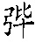
日？乌焉解羽？问：“乌”=金乌。“解”是金乌为羿射后，羽毛融化即割截之意吗？
答：不是割截。神话中有一座飞鸟来解（脱落）羽的山。当然未必是“乌”，也未必为羿所射。然此处似“乌”（金乌即“日之精”）为羿射后，羽毛脱落的样子。恐由上句联想而来罢？
【神話に飛鳥が瘄て其の羽毛を解ける（脱落する）山有り。必ず烏でもなく羿に射られたわけでもない。併しここでは烏（金烏=日の精）が羿にいられて羽毛が脱落した様に使用したらしい。上句から聯想したのでしよう？】
35页倒数2行
又善射钩……
问：“射钩”是射箭还是占卜命中？
答：不是射箭。“钩”=阄。把某件小东西藏入箱内什么的，让人猜（=射），谓“射钩”。“射”者不直接称呼物品名称，只讲一句谜语之类的话。例如，当某人说完“时时居家中，满腹有经纶”后，打开匣子一看，倘若其中那东西是蜘蛛，便算猜中。“善射钩”是精于此技的意思。
【鈎=鬮。或る小さい物品を箱か何かの中に入れて或る人に當らせる（=射）ことを「射鈎」と唝ふ。射る人は其の物品の名を直接に言はない。謎の様なことを唝ふ。例へば「時々家の中央に居、淶腹の绖綸あり」と唝って箱を開けて見ると、その中にあるものは蜘蛛であれば、的中とする。「射鈎に善す」とはその蕓に上手で即ちよく的中することなり。】
36页5行
今人正朝作两桃人立门旁……
问：“正朝”是什么意思？
答：一月一日，元旦。
二[2]
106页
……禹授之童律，不能制；授之乌木由，不能制；授之庚辰，能制。鸱脾桓胡木魅水灵山
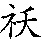
石怪奔号聚绕，以数千载，庚辰以战（一作戟）逐去，颈……。庚辰之后，皆图此形者，免淮涛风雨之难。问：“之”是命之意吗？
答：“之”=征服无支祁之事。
【之=無支祁を征服すること】
问：“鸱脾桓胡木魅水灵山祅石怪”，这些怪物是禹手下的喽啰吗？
答：是！
问：“载”是年之意吗？
答：也有版本写作“计”。或可在此字下注“一作计”，译作“约有数千”。
【或る版本には「計」となつて居ます。本文の下に（一作計）と入れて啗千程と訳して居たらいいでしよう】
问：“庚辰之后”是什么意思？
答：即庚辰之日。原文应作“庚辰之日”。“后”字殆作者故意误用。
【庚辰の日です。本文も「庚辰の日」とすべしだ。「後」とは作者の有意の誤だらう。】
这是伪古文，因此故弄玄虚。
【これは僞古文だからわざと間違だらけの様にして居るです。】
110页
杜甫《少年行》有云：“黄衫年少宜来数，不见堂前东逝波。”谓此也。
问：“东逝”或“东逝波”是成语吗？“东”是什么意义上的用法？“水东流”的“东”吗？
答：中国大抵水向东流。“东逝波”接近于成语。
【支那には大抵水は東に流ると唝ふ。まづ熟語らしく成て居ます。】
问：杜诗“黄衫年少”句等于“谓此也”，此种用法有何先例？抑或是先生的创造发明？
答：宋人已有此用法，并非我所发明。
【宋人既にそう考へました、私の発明ではないのです。】
问：此诗是杜甫读蒋防的《霍小玉传》后写成，还是据当时传说写成？
答：杜甫可能当时耳闻此事，未读蒋防文章。此也系宋人推测。
【杜甫が當時其事宓を聃いただろうと唝ふのです。蔣防の文章を見たのではない。それも宋人の推測。】
三[3]
122页
铉字鼎臣……官至直学士院给事中散骑常侍，铉在唐时已作志怪……比修《广记》，常希收采而不敢自专……
问：“直学士院给事中”和“散骑常侍”两者是并列的吗？
答：不！在学士院任（=直）“给事中”，且又成为“散骑常侍”。
【學士院を番（=直）する給事中にして且つ散騎常侍なり】
问：“常”是平常还是尝？
答：常=尝=曾经。
以前有将两者通用的，但其实用错了。
【常=嘗=かつて
昔はこの二字、通用することありけれども宓は間違です。】
124页 《江淮异人录》引文
成幼文为洪州录事参军……傅于头上，
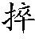
其发摩之，皆化为水……问：“皆”，指血还是指头？
答：头全部化作水，真是灵丹妙药。
【頭全部が皆な水に変化しました、宓に神妙な蘺です】
126页 洪迈《夷坚志》引文
奇特之事，本缘希有见珍，而作者自序，“乃甚以繁夥自熹，耄期急于成书，或以五十日作十卷，妄人因稍易旧说以投之，至有盈数卷者，亦不暇删润，径以入录”（陈振孙《直斋书录解题》十一云）。
问：以上作者自序是“乃……录”吗？还是“乃……自熹”，其后系陈某之言？
答：“耄期”之后皆陈振孙所言。奇特之事，一向稀有，以为珍贵，然而据作者自序，以其甚多而洋洋自得。（据陈氏书录）一到耄期……
【耄期唝々以下、皆な陳振孫の言を述べたのです。奇特のことはもとより希有を以て珍となされ、而して作者の自序によれば甚たその汊山であることを以つてうぬぼれ（陳氏の書録—によれば）耄期にいたると……】
126页
惟所作小序三十一篇，什九“各出新意，不相复重”。
问：“各出新意，不相复重”为《宋史》本传之语吗？
答：出自宋人随笔（赵令畤《侯鲭录》）。
【宋人の陘筆による（趙令畤『侯鯖録』）】
127页 《绿珠传》引文
……赵王伦乱常……秀自是谮伦族之……
问：“族”是杀尽全族吗？全族一般指父母、本人、子孙抑或包括祖父、兄弟？
答：常=纲常。三族，一为父母、伯叔，二为自身及兄弟，三为子女。也即祖父母的子孙（父母伯叔）、父母的子孙（自己及兄弟）和自己的子女，即构成“全族”。有“三族”与“九族”之分，晋朝大抵只株连三族。
【亦即ち祖父母の子孫（=父母伯叔）、父母の子孫（自身及び其の兄弟）、自分の子女、即ち「全家」なり。三族と九族の分あり、晗朝は大抵只三族を誅す。】
129页 《赵飞燕列传》引文
兰汤滟滟，昭仪坐其中，若三尺寒泉浸明玉。
问：“三尺寒泉”=兰汤？“明玉”=昭仪？
答：是，是比喻。
130页 《大业拾遗》引文
……长安贡御车女袁宝儿……昔传飞燕可掌上舞，朕常谓儒生饰于文字……学画鸦黄半未成
……[4]
问：“常”是平常还是尝？
（增田画）
答：曾经的意思。
问：鸦黄是额黄的意思吗？
答：是。
131页 同上篇引文
……帝昏湎滋深，往往为妖祟所惑，……吴公宅鸡台，……方倚临春阁试东郭
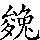
紫毫笔，书小砑红绡作答江令“璧月”句……韩擒虎跃青骢驹拥万甲直来冲入……后主问帝：“萧妃何如此人？”问：“吴公宅”、“鸡台”是地名吗？
答：[5]
问：“小砑红绡”中，“小”是形状小的意思吗？
答：是。
问：“江令”是“江”地长官之意吗？
答：是，“江”指江总，太鼓寺文官。
【江は江緶、太鼓持文臣だ】
问：“万甲”是万兵的意思吗？
答：是。
问：“萧妃”是隋炀帝的妃子吗？
答：是。
四[6]
134页 《唐太宗入冥记》引文
“……判官懆恶，不敢道名字。”帝曰：“卿近前来。”轻道：“姓崔，名子玉。”
问：判官“不敢道名字”？
答：不敢道判官的名字。
问：为何“不敢道名字”？
答：（唐太宗向那人打听判官姓名，那人说）“判官凶狠异常，不敢道其姓名”（说了判官要发怒之意），唐太宗说：“你靠近我悄悄地讲！”于是那人轻声说道：“姓崔，名子玉。”
【（唐太宗が其人に判官の姓名を聞くと其人が唝ふに）「判官が非常にきびしいから、他の姓名を知らせることが出きない（唝ふと判官が怒るの意）」帝曰く「しからば汝が余に近づいて窃に唝へ！」是に于いて其人が小さい聲で唝には「姓は崔、名は子玉」と】
问：“姓崔，名子玉”，是“卿”的姓名吗？
答：判官的姓名。
135页 《梁公九谏》引文
第六谏
则天睡至三更，又得一梦，梦与大罗天女对手着棋，局中有子，旋被打将……
问：“局中有子”是局中有“意外的”子的意思吗？
答：不是。局中有子，但马上要被对方吃掉。旋，立即；将，败退。
【局中には子が有つたけれども直ちに人に取られて仕舞ふ】
136页 《梦粱录》记载
“小说”名“银字儿”，如烟粉、灵怪、传奇、公案、朴刀、杆棒、发迹、变态之事……
答：[7]“烟粉”即娼妓、艺妓。“朴刀”、“杆棒”即舞刀弄棍，也即武术。
【=娼妓、蕓妓のこと。
刀を使ふこと、棍棒を弄ふこと=武術】
问：“发迹变态”是发迹性变态乎？
答：否，乃发迹和变态之意。发迹指穷人突然变为富翁，变态指不按世态炎凉之常规罢。
【発跗は貧乏人が急に金持になること之類
変態は世態炎凉の一定なしの類ならん】
140页 《五代史平话》引文
黄巢兄弟四人过了这座高岭，望见那侯家庄。好座庄舍！
问：“庄舍”是农家还是别墅？
答：侯家庄系村名，“庄舍”实指全村之屋舍。
【候〔侯〕家葒は村の名で、葒佘とは宓に全村の家屋を指すのです。】
144页 《西山一窟鬼》引文
又是 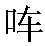 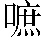
问：“”是特伟大之意吗？怎会有此种意思？无字面意思的俗语吗？
答：是俗语，故词源不明。
【俗語ですから其の語源を唝へない。】
五[8]
148页第2行
《错斩崔宁》、《冯玉梅团圆》两种，亦见《京本通俗小说》中，本说话之一科，传自专家。
问：因专家得以流传之意吗？
答：对。专家=说话人。
151页 《取经记》引文
孩儿化成一枝乳枣
问：一根乳枣之枝？指乳枣的树枝？
答：乳枣即枣。一枝枣树，其枝上有枣实。
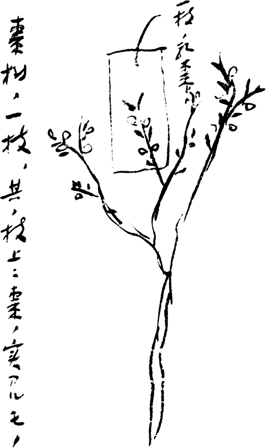
【乳棗は只、棗です。
棗樹の一枝、其の枝上に棗の宓あるもの】
155页 《大宋宣和遗事》引文
那教坊大使袁陶曾作词，名做《撒金钱》
问：“教坊大使”是官名？是取缔女乐士（或官妓？）的管理人？
答：是官名。教坊是官妓所居处，“教坊大使”即掌管那教坊的人。这是很不令人佩服的官吏。
【官名です。教坊は官妓の居る処、教坊大使は其の教坊をつかさどるものでどうも感心すべからざる役人です。】
155页末行
鳌山高耸翠
问：“山”是群的意思吗？“耸翠”是成语抑或仅仅是耸的意思？
答：鳌山高耸翠：以竹为骨架，糊上彩纸作灯。其形似山，山下制鳌鱼等，象征大海，故名其灯为“鳌山”。鳌山上苍翠耸立，山系绿色，故以“翠”表示。其实不过是“碧绿的鳌山高高耸立”之意，是修辞上这样说罢了。
【鰲山高聳翠。竹の骨の上に紙を張つて燈を作る。其の形は山で山の下には鰲魚などを拵へて海を意味す。だから、其の燈の名を「鰲山」と唝ふ。
鰲山が高く翠を聳つ。山は緑色のですから「翠」であらはす。宓は「青い鰲山が高く聳つ」との意味に過ぎない。修辭上こうなつたのです。】
六[9]
157页
宋之说话人……而不闻有著作；元代扰攘，文化沦丧，更无论矣。
问：是更无论“文化沦丧”，还是更无论“不闻有著作”？我想，大概是前者，但从“更”字上穿凿思考，后者似也可通。
答：不是更无论“文化沦丧”，而是更无论“不闻有著作”。元代大乱，一切文化沦丧殆尽。“说话”之不振自不待言。
【元代がごたごたで一切の文化が淪喪した。「説話」のふるわないことは唝ふ迄もないです。】
158页 《全相三国志平话》引文
却说黄昏火发，次日斋时方出
问：“斋时”即齐时，等待时间之意吗？还是“早晨”的意思？为何“斋”含有早晨之意？
答：斋时，是早晨罢。和尚之进餐专称为斋。而且因从前的和尚“过午不食”，大抵早晨进餐，所以“斋时”指早晨，且成为通用语。不过现已不用。
【斋時は朝のことでしよう。坊様の食ふことを特别に稖と唝ふ。そうして昔の坊様は「過午不食」ですから、大抵朝に喫べる。それで稖時と唝へば朝になる、且つ一般に通用した。併し今はもう使はない。】
160页
在瓦舍，“说三分”为说话之一专科，与“讲五代史”并列（《东京梦华录》）
问：“瓦舍”可以理解为街名吗？
答：宋朝都市十分可怜，多数是草屋，瓦屋寥寥无几，且大多在繁华地区。因此，“瓦舍”具有“繁华街市”之意，并成为地名，恰如银座。
【宋の都仝は可哀相なものです。草葺のもの、多啗。瓦を使ふものは幾分しかない、しかも、大抵繁盛なところ。だから「瓦で造つた家」と唝へば「繁昌な市街」を意味する様になつて地名となつた、恰度銀座を指すが如し。】
问：“说三分”就是“说三国志”？“三分”是指曹、孙、刘三分天下吗？
答：对极了。
问：“讲五代史”应作“说五代史”吧？因为第136页《东京梦华录》云：“曰小说……曰说三分，曰说《五代史》。”
答：应作“说”，殆误排。
【説とすべきです、誤植でしよう】
163页 《三国志演义》第一百回引文
……将军深明《春秋》，岂不知庾公之斯追子濯孺子者乎？
问：“庾公之斯”和“子濯孺子”是人名吗？
答：都是人名。
【皆な一人の名です】
169页 《平妖传》有关杜七圣处引文
①揭起卧单看时，又接不上
问：“卧单”是布制寝具吗？“单”是什么意思？
答：只是大包袱布的意思。“卧”指像被子大小，形容其大。“单”是未经“缝合”的包袱布。
【只だ「大な風吕敷」の意。「卧」とは捱蒲圇の大さの意味で只その「大」を形容す。單とは「あわせ」でない風吕ひき。】
②喝声“疾！”可霎作怪
问：“可霎”是“一瞬间”“忽然”呢，抑或只是无意义的感叹词？
答：“可霎”倘直译：但（可）像死那样（霎=杀=死）。倘意译，则为：喝一声“疾（快）”之后，确实发生了奇怪（或奇妙）的事……
【可霎を直訳すれば併し（可）死ぬ程（霎=殺=死）。意訳すれば「疾（はやく）！」と喝したが宓に変（or妙）なことで……】
七[10]
173页 引洪迈《夷坚乙志》（六）蔡居厚冥谴一事中
……未几，其所亲王生亡而复醒……
问：“所亲王生”是亲属王生之意吗？
答：“所亲”乃亲密、知交之意，或许是门客罢。
【所親とは、したしいもの、よく相知つて居たもの、けだし門客だらう】
176页
所削者盖即“灯花婆婆等事”（《水浒传全书》发凡）
问：《水浒传全书》是《水浒全书》（《忠义水浒全书》）的误排吧？
答：“传”字非误排。是“全部”《水浒传》=未加删节的《水浒传》之意。
【「佾」は誤植でない。「全部の水滸佾=删削を加はへなかつた水滸佾」の意】
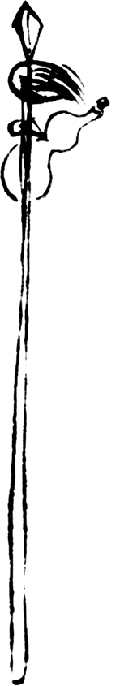
177页 《水浒传》写林冲在雪中离开危屋的引文
花枪
问：“花枪”是一种农具——军草料场用的吗？“枪”这种农具（割草用）在《管子》中能见到。
答：是武器（长矛）。从前士兵肩担此物而行罢。似挂葫芦。
【武器（やり）です。昔しは、そんなものを、ふたんに持つて行いだのでしよう
葫蘆をつけるによし】
178页 写林冲雪中行沽的引文
a.……炭，拿几块来生在地炉里；
问：“地炉里”三字是一个名词，还是“地炉”二字是一个名词？
答：“地炉”二字是一个名词。“地炉里”=地炉之中。所谓地炉，即挖开地面，使其呈凹形，然后烧木炭。
【地熗裏=地熗の中、地熗とは地面を掘つて少々へこましで木炭を焚くもの。】
b.……把草厅门拽上，出到大门首，把两扇草场门反拽上……
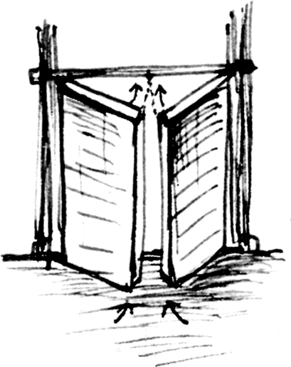
（增田画）
问：如左图这样理解“拽上”、“反拽上”行否？或者，内外关系是否正好相反？
答：正好相反。中国的大门（玄关之门）都向内开。反拽只是主人在外面将门关上的意思。因为一般大多人在屋内关门。normal（标准的）
【支那の大門（玄関の門）は昔、内へ向つて開けるのです。
反拽とは主人が外に出て門を閉めるだけの意味。普通は大抵人が内に居て閉めるのでからnormal】
180页 写“古时有个书生，做了一首词”的词句
问：“国家祥瑞”是瑞雪兆丰年之意吗？
答：是。
问：“高卧有幽人，吟咏多诗草”，是抨击高卧幽人吗？
答：是。
问：或者“高卧有幽人”是指这首词的作者本人吗？
答：不。
182页
……田虎王庆在百回本与百十七回本名同而文迥别……
问：“百十七回本”系百十五回本之误吧？
答：记不清楚，或许是吧。
【よく篲えてないが、大分さうでしよう】
185页 写《后水浒》出现的原因
……故至清，则世异情迁，遂复有以为“虽始行不端，而能翻然悔悟……而其功诚不可泯”者……
问：引号内系赏心居士序文吗？
答：是。
八[11]
193页的开始
a.玄帝收魔以治阴，“上赐玄帝……”
问：令玄帝降伏妖魔的是前页的元始，且元始=“上”（上帝）？
答：元始不是“上”。“上”是玉帝=天帝。命令虽由元始下达，但须由天帝亲自加封。
【元始は「上」でない。「上」は玉帝=天帝です。命令は元始から玦へたけれども御褒美は天帝から出さなければならないらしい。】
b.……初谓隋炀帝时……上谒玉帝，封荡魔天尊，令收天将；于是复生……入武当山成道。
问：以上叙述玄帝本身及成道之事，是成道之后成为玄帝的吗？
答：是。
c.……玄天助国却敌事……
问：“却”=退？
答：是。
d.193页中间 如来三清并来点化，……
又192页最后行 元始说法于玉清……
问：玉清、上清、太清即三清，都是仙人居住的府第，我这样理解；但“如来三清并来点化”的“三清”是三清头领呢，还是有此种封号的特殊仙人（居住地）？
答：玉清真人、上清真人、太清真人合称为三清。这些三清居住的地方叫玉清宫……等，在叫玉清……等的天界。然而，这个三清只是老子一人的化身——根据这一复杂的化学，所谓“如来三清”其实就是“如来老子”。
【玉清穞人、上清穞人、太清穞人、これは三清と唝ふ。この三清様の住居する所は玉清宫……などと唝つて玉清……などと唝ふ天界にあり。
而してこの三清様はただ老子一人の化身で——この難しい化學によれば「如瘄三清」とは宓に即ち「如瘄老子」だ。】
问：仙界情况不甚明了，真想早点成仙去看看。
答：同感，同感！
【同感同感！】
196页最初行下 《西游记传》引文
忽然真君与菩萨在云端……
问：“真君”系老君之误吧？
答：不。真君即天尊元始罢。
【穞君とは即ち天尊の元始のことでしよう】
196页
乃始两手相合，归落伽山云
问：是“回落伽山”（自动），还是“使其归落伽山”（他动）？
答：落伽山系观音菩萨居住地，其实是被观音带回其住处。
【落伽山は硚音様の居る処、宓は硚音につれられて彼の居る処にへたのである】
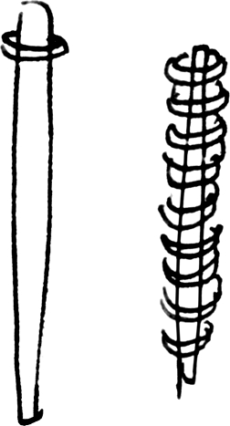
（增田画）
问：孙悟空的金箍棒是否如图所示？
答：不对！孙悟空氏的金箍棒我也还没有拜见的荣幸。想来大约是普通形状的棍棒，为使其坚固，两端镶上了铁环罢。然而孙是大富翁，因此用黄金代替了。这就是所谓“金箍”罢。
【孫悟空氏の金箍棒は私も未た
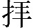
見の光榮を有しなかつた。思ふに普通の様な棍棒で堅固にならせる爲め鳑端に鐧の環をはめたものであらう。そうして孫が金持だから鐧の代に黄金を使つた。これはいわゆる「金箍」でしよう】
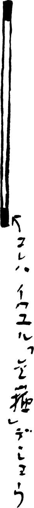
九[12]
203页 《西游记》中《小圣施威降大圣》引文
掣出那绣花针儿，幌一幌，碗来粗细……
问：“幌一幌”是一种动作吗？
答：是。
问：“幌”字是什么意思？
答：“幌”即布幔，或布制招牌。因那类东西大多会飘动，因而引申为“摇动”或“挥动”之意。
【幌=カーテンor布で拵へた看板。あんなものは、大抵ぶらぶら動いて居るから転じて「摇動」or「振る」の意味になる。】
204页第2行
……后一事则取杂剧《西游记》及《华光传》中之铁扇公主以配《西游志传》中仅见其名之牛魔王……
问：“志”系“记”之误吧？
答：是。
206页的开始 《孙行者三调芭蕉扇》引文
火焰山遥八百程，……火煎五漏丹难熟，火燎三关道不清。
问：“五漏”与“三关”作何解释？又，我认为这两句诗与三调芭蕉扇或火焰山几乎无关。岂非“有诗不为证”么？呵呵。此诗（从“火焰山遥八百程”至“水火相联性自平”）难译，学生想在书中全部删去，如何？（不过，倘若前记二句弄明白了，就再考虑。）
答：与火焰山有关。即“火”（人欲）旺妨碍成道之意。火煎熬五漏，“丹”（即道）就难成。火烧三关，道路就看不清楚。
“五漏”与“三关”均系人身上的某一部位，不过哪一部位，我也弄不清楚。“五漏”指鼻孔（两个）、口、肛门、阴部罢。确实都是不雅之处。
【火燄山と関係がある。つまり火（=人欲）が盛んになつて成道を阻礙したの意味です。火が五漏を煎じて丹（=道）が熟し難く、火が三関を燎して道がはっきりしなくたつた。
五漏と三関とは皆な人身の上の或る部分で、併し何処であるかは僕にも知りません。五漏とは鼻の孔（二つ）、口、肛門、陰部だろう。なるほと、皆なよくない処だ。】
208页2行
心生种种魔生，心灭种种魔灭……
问：“种种”即many？[13]
答：不。
问：“种种”即viel？[14]
答：是。
问：是不是心动种种魔生，心灭种种魔灭之意？
答：是，即“心动魔生”之说。与“境由心造”之说同。
【つまり心が動けば魔もついて起るとの説。「境は心に由りて造られる」との説に同じことです。】
十[15]
209页3、4行
其封神事则隐据《六韬》（《旧唐书·礼仪志引》）、《阴谋》（《太平御览引》）……
问：“引”不是在书名号里的吧？或许“引”是序文的意思吧？
答：是误排。
210页
然“摩罗”梵语，周代未翻，《世俘篇》之魔字又或作磨，当是误字……
问：以上带点的字，翻译时为参考加注：“‘《译经论》曰：魔，古从石作磨……梁武帝改从鬼（《正字通》）。’《正字通》多附会之说，不甚可靠，附作参考。”
以上注释，您以为是蛇足吗？书店里有《译经论》吗？
答：周朝尚未见以“磨”作“魔”（mara）的译语。
【周朝には「磨」でmaraの訳語とすることも未なかつた】
211页 “截教之通天教主设万仙阵，阐教群仙合破之”之引文
这圣母披发大战，……遇着燃灯道人，……正中顶门。可怜！正是：封神正位为星首，北阙香烟万载存。
问：“为星首”是谁？封神正位时，成为“星首”的是“燃灯道人”还是“圣母”？“星首”是“星官之首”吗？“北阙”是燃灯道人的宫殿还是圣母的宫殿？
答：《封神传》中的诗大抵均为歪诗。
圣母被杀，死后封神榜上列名，成为神。因此，封神时，属于正位的部门，成为正位星官的第一名，神庙（=北阙，圣母也供于其中）的香火万古长存。
【封神佾の中の詩は、大抵馬鹿らしいものです。
聖母は殺されました。殺されたが封神榜の上に名が出で神となる。
だから：封神するときには正位の部門に序して正位の星官の第一番になりて神廟（=北闕の聖母も中に祀らてる）の香焓は蓚古に留る。】
214页 《三宝太监西洋记演义》引文
自序云：“今者东事倥
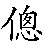
，何如西戎即序，不得比西戎即序，何可令王郑二公见。”问：“东事”就是倭寇之事吗？
答：是。
问：“即序”云云，是指王郑二公及时恢复西戎秩序（即平定），而如今相反，却难以平定倭寇之意吗？
答：嗯，略有这个意思。
如今东事烦忙，与西戎即序（立即恢复秩序，即平定。指《西洋记》中所写之事）相比如何？若不能相比，则实在不能让王郑二公看见（即面对□□，觉得羞愧）。
【まあ、少し有る。
今は東事で忙しく西戎の即序（ただちに秩序つく=平服。それは西洋記に書いてることをさす）にくらべればどうだ？若し比べることが出瘄なければ宓に王鄭二公に見せてはいけないことだ（=□□に牷してはづかしいことだ）】
问：《春在堂随笔》（《旧闻抄》）作“即叙”，“叙”是叙述之意吗？（快叙西戎之事，否则二公不会罢休。）
答：“叙”=序=恢复秩序。
【叙=序=秩序につくこと】
216页 “五鬼闹判”中引文的最后
判官……只得站起来唱声道：“唗，……我有私”……“铁笔无私。你这蜘蛛须儿扎的笔，牙齿缝里都是私（丝），敢说得个不容私？”
问：“唗”是“闭嘴”之意吗？
答：是。
问：若说得快一点，愚以为就变成“讲”的意思了。
答：不对。“唗”仅发音而已。
问：“我有私”是“纵然我有私”之意吗？
答：对。言下之意“我的笔无私”。
问：“蜘蛛须儿”指判官脸上现生的胡须吗？
答：如若铁笔，当然无私，但你这蜘蛛丝（与私同音）制成的笔，连牙齿缝里都是丝（=私），怎能说无私呢？
【鐧筆なら、無私だが汝のくもの糸（私と同音）で拵へた筆は骕の間まで皆な糸（=私）である。敢て無私だと唝へるか？】
问：“牙齿缝里”是指判官嘴里吗？“牙齿”可理解为“笔”吗？
答：“私”与“丝”同音，是语言游戏。先假定其笔是由蜘蛛丝制成的，而蜘蛛口中净是丝（私），因此从判官嘴里说出来的也都是私（丝）。
【私と糸とは同音だから、言葉の逯戢である。先づ其の筆をくもの糸で拵へたものと仮定し、くもは口の中に皆な糸（私）であるから判官の口の中から出るものをも皆な私（糸）だとして仕舞ふ】
问：“扎”是“拔”吗？
答：不。
问：“扎”是“紮”吗？
答：是。
219页 《西游补》第六回引文
……倒是我绿珠楼上强遥丈夫
问：“强遥”是什么意思？
答：“强遥”难以解释。“名义上”或“有名无实”之意罢。
【强遥は、解棻に苦む。
「名義上は」或は「有名無宓」の意ならん】
问：绿珠楼上，虞美人（悟空）和项羽分手后，与别的美人宴庆，还是与项羽共宴？因手头没有原著，无法查阅，祈赐教。
答：与别的美人宴庆，不是与项羽共宴。
219页最后行
把始皇消息问他，倒是个着脚信
问：“着脚信”是走着去听到的消息，即直接消息吗？
答：不是。
问：是最确切的信吗？
答：对。“着脚”=脚踏实地=确实。
【着脚=足ふみあること=確宓】
十一[16]
222页 《金瓶梅》梗概文字
武松来报仇，寻之不获，误杀李外傅，……通金莲婢春梅，复私李瓶儿……
问：李外傅与李瓶儿是兄妹什么的呢，还是不相干的人？
答：李外傅与李瓶儿没有关系，只是被当作西门庆而误杀。
【李外傅と李瓶腘とは関係なし。只西門慶として誤殺された。】
223页 《金瓶梅》引文
妇人道：“你看他还打张鸡儿哩，瞒着我黄猫黑尾，你干的好茧儿。来旺媳妇子的一只臭蹄子……甚么罕稀物件，也不当家化化的……”那秋菊拾着鞋儿说道：“娘这个鞋……”
问：“还打张鸡儿”是什么意思？
答：“还”=尚，“打”=做；“张鸡儿”，鸡看东西时傻乎乎的眼神=故意装出一副傻样=滑稽。
【庭鳥がものを見るときに馬鹿らしい
目つきをする=わざと馬鹿なふりをする=おどけ】
问：“黄猫黑尾”是什么意思？
答：不一样之意，在我看不到的地方干一些不同的事。
【一様でないこと、私の目のとどかない処に違つたことをやつてる。】
问：“好茧儿”是什么意思？
答：“干”=做。“好茧儿”，拉到秘密的地方做什么事。
【秘密な処にひきこんで何かやつて居ること】
问：“来旺媳妇子”是“来旺妻子”吗？
答：对。
问：“不当家化化的”是什么意思？“家”是“家伙”吗？“化化”是口吃语吗？
答：“不当家化化”=熟语，“罪孽”的意思。什么宝贝啊，做这样罪过的事（因为过于看重了）。那个淫妇死后一定会堕入阿鼻地狱的！（因为她的东西被过于看重了。）
【不當家化化=熟語。「罪である」の意
何の宧であるか、こんなに罪あることをして（余りに珍重するから）、ある淫婦が死んだ後に阿鼻地獄に邛ることはあたりまへだ（彼の女のものは余りに珍重されたから）】
问：使女称女主人为“娘”吗？
答：是，mǔtter之意。[17]
225页
……只见两个唱的……向前插烛也似磕了四个头。
问：“插烛”是蜡烛吗？
答：是。
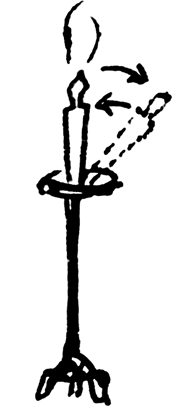
（增田画）
问：“磕了四个头”什么意思？是像我所画的那样？
答：插蜡烛的话，须直插罢。此处只是笔直（=毕恭毕敬）拜了四拜之意。
【蠟燭を揲すには、ますぐでなければならん
ここには、只、ますぐに=（行儀よく、恭しく）四したの意。】
227页
万历时又有名《玉娇李》者……袁宏道曾闻大略，云“……武大后世化为淫夫，上烝下报……”
问：《左传》云“卫宣公烝于夷姜”，夷姜系卫公庶母。《左传》又云“文公报郑子之妃”，郑子之妃相当于文公什么人呢？
答：手头无书可查。
【調へるる本持合はず】
问：这里，我想可理解为“上烝”即上淫，“下报”即下淫。《辞源》曰：“下淫上曰报。”与“烝”同义。您以为如何？
答：不对吧。晚辈与长辈通奸谓“烝”，长辈与晚辈通奸谓“报”。“卫宣公烝于夷姜”，若以宣公为中心，是“烝”；以夷姜为中心则为“报”。
【間違でしょう
目下が目上と姦通することを「烝」と唝ひ
目上が目下と姦通することを「報」と唝ふ
「衛宣公烝于夷姜」宣公を中心として唝へば「烝」、夷姜を中心として唝へば「報」です。】
229页
《续金瓶梅》主意殊单简，……一日施食，以轮回大簿指点众鬼……
问：“施食”何意？
答：[18]
问：把轮回大簿让众鬼看？
答：是。
问：用轮回大簿调查众鬼？
答：不是。
至潘金莲则转生为……名金桂，夫曰刘瘸子，其前生实为陈敬济，以夙业故，体貌不全，金佳怨愤，因招妖蛊，又缘受惊……
问：谁招妖蛊？妖蛊不招自来吗？
答：金桂怨愤，妖蛊乘虚而入，不招自来，故云“因招妖蛊”。
【金桂が怨憤する、その欠燾を耬じて妖蠱が自らやつてくるだから「因つて妖蠱を招した」と唝ふ。】
231页
一名《三世报》，殆包举将来拟续之事；或并以武大被酖，亦为夙业，合数之得三世也。
问：武大被毒死与“三世”有何关系？
答：此处之“世”非父子两世之“世”，而是一人轮回。如武大前身（=一世）——武大（=二世）——武大后身（=三世）。
【この「世」とは父子の「世」でない。一人の輪迴上のことです。
武大の前身=一世——武大=二世——其の後身=三世】
问：《续金瓶梅》将金莲写作河间妇。“河间”是地名还是人名？
答：“河间”系地名。这里是“谋杀亲夫女子”之意。因河间出了个以谋杀丈夫闻名的女人，故有此词。[19]
【河間は地名。ここは、「夫を謀殺した女」の意。河間に夫を殺害した有名な女があつたから、こう唝ふ名詞が出瘄たのです。】
十二[20]
234页 “弗告轩”三字
……却将告字读了去声，不知弗告二字，盖取《诗经》上“弗谖弗告”之义，这“告”字当读与“谷”字同音。
问：也就是说，“告”应读コク，发音为コウ吗？
答：对。
235页
“谢家玉树”
问：“玉树”，《辞源》引《晋书·谢玄传》谓：“晋谢安问诸子侄，子弟何与人事，正欲使其佳，玄答曰：‘譬如芝兰玉树，欲其生于庭阶耳。”
“何与人事”是什么意思？是“倘若人世间能随心所欲”？还是“受人支配”？或许是“在人事方面”的意思吧？请写下全文大意。
答：“何与人事”=与人事有何相干？“人事”即自己之事的意思。
晋谢安问自己的子侄们：“子侄与长辈有何关系？并且想要获得佳位？”玄答道：“这就像想把芝兰玉树栽在自己庭园里一样。”
可谓“拙译”！
【何玦人事=人の事と何の関係ある？人の事とは自分のことの意。
晗謝安が自分の子姪達に問ふ：「子姪は目上と何の関係ある？しかもその佳（よい）であることを望むのか？」玄答曰：「丁度芝蘭玉樹の様な良木が自分の家の庭にあつてほしいことと同様のみ。」
拙訳と唝ふ可し！】
236页 山黛之诗
夕阳凭吊素心稀，遁入梨花无是非，……瘦来只许雪添肥
问：“凭吊”是伤心吗？
答：是。
问：只许雪增添其肥吗？
答：是。因是白燕，就像用雪加上去似的。可谓劣诗！
【白燕ですから只だ雪でその上にかへることに似あふ。
朘詩と唝ふ可し！】
237页最后行
因与绛雪易装为青衣
问：“与”是“共同”，还是“一个人与……易”？
答：两人一起。
【二人とも】
241页1—2行
一夕暴风雨拔去玉芙蓉，乃绝。
问：“乃绝”是绝交，还是死绝？
答：绝交，绝对不来。
【絶えて来ない】
书外的问题
问：a.特进光禄大夫、柱国、少师、少傅、少保、礼部尚书，“柱国”一直关联到“少保”吗？
答：不。
问：此官名句读时，可否如上标点？
答：可。
问：b.生员与监生的区别？都是秀才，且受乡试的学生吗？作为学生，他们入学吗？我知道生员是秀才，但从“入学生员”讲，他们进什么学校吗？——为秀才乡试，设立特别学校，是否进那类学校？
答：生员考试及第方成秀才。优秀童子入“国子监”（过去叫太学）读书谓监生，到了一定年限，便与秀才有同等资格。（但是在清朝，只要出钱，就可买监生称号。）
【試驄に及第して、秀才になつたもの。
童子で優秀たるが爲めに國子監（昔は太學と云ふ）に這いて勉强するもの、一定の年限たつと秀才と同じ資格を有す。（しかし清朝には金を貢げは監生の囷吖を買ふことが出瘄た。）】
问：c.“二氏之学”也可以叫小说学吗？还是指佛、道，抑或黄、老？
答：二氏之学指佛、道，非指黄、老。
【二氏之學=亻、道。】
十三[21]
244页末至225页初
犹龙名梦龙，长洲人，故绿天馆主人称之曰茂苑野史
问：为何将“长洲”叫“茂苑”？
答：茂苑系长洲别名，就像日本京都称“洛”一样。
【茂苑は長洲の别名、丁度日本の京都は「洛」と唝ふが如し】
247页倒数第2行 《陈多寿生死夫妻》引文
终不然，看著那癞子守活孤孀不成？
问：“终不然”大概是“于是就”之意吧；要是把“终不然”换成其他文字，怎样的文字才合适呢？换用“难道”，去掉“不成”二字，可以吗？
答：“终”仅强调语气，全句难译。“既不能另嫁，又不能毁约，非要守着那癞病患者（含不能行动之意），强忍做活孤孀（有丈夫的寡妇）不行（=不成）吗？！！！”
【「終」とは只語氘を强める字。
全句は訳し難い。
「别の処に嫁に行くことも出瘄なく、婚約を破橐することも出瘄ない。しからばあの癩病患者を見て（宓行出瘄ない意をふくむ）活孤孀（夫あるやもめ）になつて居ることを我慢しなければならない（=不成）のか？！！！】
248页引文最后
任他絮聒个不耐烦，方才罢休……
问：“他”=浑家？
答：对。
问：“方才罢休”指浑家自己吗？
答：对。任其饶舌，待其自觉无趣时就会罢休。
【いくらも饒舌らせて置けば自己ひとり、つまらなくなつてやめて仕舞ふ】
250页 《西湖二集》引文
却不道是大市里卖平天冠兼挑虎刺
问：“大市里卖平天冠”一语，因《通俗编》引宋·廖融故事中有详述，故明其义。“虎刺”是一种有刺的草吗？或者，“挑虎刺”是“草市”时在店铺门口吊草的风俗，因有刺谁也无法靠近的意思吗？请详细赐教。
答：老虎在草丛中被刺扎进肉里。“挑虎刺”就是为老虎把刺挑出来。卖王冠与挑虎刺的生意，无人问津。
【虎が何処かの藪で刺（とげ）にさされて、その刺が肉の中にとまつて居る、「挑虎刺」は「虎の爲めにそのとげを出してやる」こと
王冠を る商と虎の爲めに刺を出す商は相手がない筈である。】
る商と虎の爲めに刺を出す商は相手がない筈である。】
十四[22]
257页 蒲松龄传略
始成岁贡生
问：“乡试落第的生员（秀才），长年向政府纳粮者，或确有学问德行者，不经考试，由推荐而获学位的人叫贡生。贡生分数种。每年按额向政府（太学）献米而受推荐，谓岁贡生。但后来每年只根据所需人数推举的贡生才为岁贡生。”对“岁贡生”欲加如上注释，但对“岁”字的说明不过是猜测。后面部分这样写对吗？敬请订正。
“岁贡生”是作“岁贡”之“生”吗？
或者，是“岁岁”之“贡生”吗？
答：乡试落第的生员（秀才），根据其德行、学问，每年（=岁）由地方长官向中央推荐（=贡），谓“岁贡生”。
但清朝仍由科举考试选拔，且即便成了岁贡生，也仍住原地，不去北京，徒有其名罢了。
“岁贡生”不是作“岁贡”之“生”，是“岁岁”之“贡生”。
【鄉試に及第せぬ生員（秀才）で、その德行學問によつて每年（=歲）地方の長官より中央に推薦（=貢）するものを「歲貢生」と唝ふ。
しかし清朝では矢張り試驄によつてし、且歲貢生になつても不相変地方に居て北京に行かなかつた。詰り一の肩書にすがなかつたのです。】
259页 《聊斋志异》中《黄英》引文
问：何为“瓜色”？
答：即青色。“瓜蔓之令”是一种酒令，由掷（骰子）决定胜负。仅一面红色，其余五面均为黑色（或青色）即“瓜色”。无红色即输，须罚喝酒。酒令在全席传递进行，恰如瓜藤蔓延。
【一種の酒令でを投げて勝負を决す。一燾の面だけ赤色、他の五面は黑（或は青）色、即ち「爪色」、赤色のないときは負るので酒を飲まなければならん
全座に渡たでやるのですから、丁度瓜の蔓の様に蔓延して行く酒令】
为瓜蔓之令，客值瓜色……
259页
狐娘子
问：“狐娘子”=狐夫人（已婚）？还是狐小姐（未婚）？
答：狐夫人。
【狐夫人です。】
260页
逾年
问：“逾年”=过了数年吗？可说翌（=明）年吗？“经过数年”或“翌年”都可说吗？
答：过了一年。
【一ケ年ほと過ぎて】
260页最末行
约与共尽
问：几乎、一起、皆、尽之意吗？
答：约定与“他”一起饮完。
【「彼」とともに飲みつくして仕舞ふと約束した。】
268页11行 《滦阳消录》引文
立槁
问：“立槁”是立刻死去？还是成语？
答：有“立刻死”和“站着死”两种意思，此处我想可译作“呆呆地坐了数日就那样死去了”。
【「立所に死んだ」と「立つて死んだ」との鳑方の意義ともとれるが、そこでは「盆槍と啗日坐つてそのまま死んだ」と訳した方がよいだらうと思ふ。】
问：请通俗易懂地教我什么叫“八股”。
“成化二十三年会试乐天者保天下文起讲先提三句即讲乐天四股过接四句复讲保天下四股复收回句作大结
弘治九年会试责难于君谓之恭文亦然每股中一反一正一虚一实一浅一深其两对题两扇立格则每扇之中各有四股次第之法亦复如之……”（《日知录》）
头脑里丝毫没有“八股”的概念，上文百思不解，昏头昏脑。
答：关于《乐天者保天下》试题的答法
先写三句，这叫“起讲”。然后四股（=节）写“乐天”。再写四句过渡至下文。接着写四股“保天下”。尔后写四句作结。（四股加四股为八股。）即八股的构造为起讲三句——有关题目前半部分的四股（即一扇）——桥（=过渡）四句——题目后半部分的四股（又一扇）——结尾四句。（一股写法由反及正，或由虚至实，或由浅入深，皆可。）
【『「蚲天者保天下」に就いて』と唝ふ題目の答へ方
先づ三句を書き、それは「起講」と唝ふ。そして四股（=節）を「蚲天」について書く。そして又四句をかいて下文にわたり行く。その次「保天下」について四股書く。そうして四句をかいて、むすぶ。（四股に四股を加へば八股）
即ち、八股の構造は起講三句——題目の前半について四股（即ち一扇）——橋（=過接）四句——題目の後半について四股（又一扇）——結語四句。（一股の書き方は、反より正に、或は虚から宓に、或は漶から深に這入る様に書いても皆な可。）】
十五[23]
275页 马二先生的“举业论”
孔子生在春秋时候，那时用“言扬行举”做官……
问：“言扬行举”是马二先生所创造的成语吗？
答：一般用语，即便独创也非成语。即言辞优美或品行出众者被推举为官吏的意思。
【普通の言葉で猸創も熟語でもない。つまり言語よく或は品行よければあげられて官吏になるとの意。】
277页11行 《儒林外史》十四回引文
饺饼
问：“饺饼”=一种糖吗？
答：是点心。用面粉做皮子，内有馅子。饼大抵呈圆形，饺像
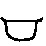
形状。【菓子です。粉で皮を拵へ、中に餡あり。餅は大抵 形、餃は様な形をして居る】
形、餃は様な形をして居る】
278页8行 同上书第四回引文
吉服
问：“吉服”是吉庆衣服（？）之意，还是通常的衣服（接客时穿的）？
答：“吉服”是礼服。非丧事时，均穿吉服与客人相会。是通常衣服，不能说是特别吉庆的衣服。
【吉服は祛服です。喪でないときは皆な吉服で客と仝ふ。通常服ですが特别にめでたい服とも唝へない】
书外问题
扶乩
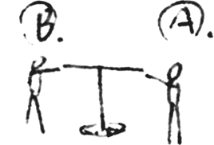
（增田画）
问：以前曾听说过，大致有些了解。在沙盘上画个奇怪的图形时，将它用普通文字或语言加以解释，使普通人理解。这解释者是谁？ A、B两人之外，还有人（指导者？）吗？另外，由 A氏或 B氏判读（？）吗？
答：A、B两氏中，一人为骗子，另一人傻瓜也行。
写的东西系骗子的戏法，判读也由骗子担当。然后另有一人记下骗子读出来的文字。
【 A、B二氏の中、一人は山師、一人は馬鹿でもよい。
書くのは、其の山師の手品で赗むのも、其の山師。そして别に一人の書くものが居て赗み出し通りに書いて置く。】
问：《中国小说史略》最初以庐隐笔名，刊于民国十二年六月至九月的《晨报副镌》吗？（这是否全文？）这样说，在学校上课是民国十一年吗？再有，北京的北新分册出的是上下两册吗？（因在《译者的话》中需要写到这些，请告。）
答：这个笔名我没用过。《小说史略》在《晨报副镌》没发表过。[24]
在北京大学上课是民国八九年的事，每周印二三页发给听讲者。民国十二年修订前半部由北新书局出版（上册），民国十三年出版下册。再版时（民国十四年罢）成合订本。
【この筆名をつかつたこともない
『小説史略』は晨報附鎸に出したことは無い。
北京大學で講義したのは民國八九年のことで、每週間、二三頁を印刷して聃講者に分配した。十二年に上半部を修正して北新書局から出版（上册）；十三年に下册も出版した。再版のとき（十四年か）に合本となる。】
十六[25]
287页9行 《红楼梦》第五十七回引文
一年大二年小的，……又打着那起混帐行子们……
问：意思是今年大去年小，一年比一年大？
答：第一年大了，第二年反而小了。“年龄大了，反而越来越像小孩。”即“年龄增长了，反而越来越不懂道理”的意思。
【一年は大きくなつたのに二年になると反つて小さくなつた
「年が大きくなつたのに反つて愈愈小供らしくなる。=大きくなつて愈愈わけをわからなくなる」の意】
问：“那起”是“那些家伙”之意吗？或者“起”是为了“混帐行子们”，由于“混帐行子们”？
答：“打”=“招来”。“那起”，那一派。“混帐行子”，坏蛋。
288页10行
两句话
问：“两句话”是少量的话的意思吗？
答：是。
290页最末行 《红楼梦》第七十八回引文
临散时忽然谈及一事，最是千古佳谈……
问：与何人分别？与清客（=幕友）分别吗？
答：那时贾政正与幕友们谈论（昨日）寻秋之趣事，说“临散时……”（指昨日一起寻秋的人们）
【あのとき賈政が丁度、幕友達と（先日の）尋秋の面白味を談じて居た。唝ふに「别れに臨んで……」（先日の尋秋に集つた人人のことを指す）】
291页4行
有一姓林行四者
问：“行四”是排行第四吗？“排行第几”是兄弟姐妹（子女全部）一起计算，还是兄弟归兄弟，姊妹归姊妹计算？例如“林四娘”，是林父女儿中的第四个呢，还是林父子女中的第四个？
答：女子排行既有与兄弟一起计算的，也有女子单独计算的。通常以后者为多。“林四娘”只能解释为“第四个姑娘”。
【女の排行に兄弟をも入れものもあり、女だけ、啗へることもあり。然し後者を用ふるとき多し
林四娘は只た四番目の孃様と解棻する外なし。】
291页最末行
鼓担
问：“鼓担”=担着旧货，打鼓呼卖吗？还是只限于书？或是旧货不限于书？
答：单买入的事也做。旧货、破烂，什么都收购。而且，顺便还出售。并不限于书。
【片方買ひ
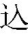
むこともする。古いもの、破れるもの、何んても買ひみ、そうして、ついでにうる。本に限らない。】293页2行
云《归大荒》
问：唱着《归大荒》之歌吗？
答：对。
293页4行
休笑世人痴
问：“不要笑世人之痴愚”之意吗？
答：对。
问：“世人啊别笑他们痴愚（=《红楼梦》里出场人物的痴愚）”之意吗？
答：不对。
296页6行
以“石头”为指金陵
问：“石之头”与“金之陵”相似之意吗？
答：“石头”只是“石”之意。“金陵”=南京别名，昔日曾有“石头城”之称，故“石头”即指南京。
【石頭はただ「石」の意。金陵=南京の别名、昔は一名「石頭城」とも唝ふのだから「石頭」は南京を指す様になる】
296页6行末—7行
以“贾”为斥伪朝
问：“斥”，指责。程度较轻。
答：对。
问：“斥”，排斥。程度较重。
答：不对。
贾与“假”发音相同。假=伪。
【賈は「仮」の発音に同じ。仮=僞】
297页2行
王国维（《静庵文集》）且诘难此类，以为“所谓‘亲见亲闻’者，亦可自旁观者之口言之，未必躬为剧中之人物”也。
问：“躬”=读者=“亲见亲见”者？
答：不对。“躬”=《红楼梦》作者自身。
【躬=『紅樓夢』作者自身】
问：此文作者对王国维所说是认可呢，还是肯定？（赞成王说？）
答：否定王说。
【王説を否とするのです。】
297页
汉军
问：“汉军”=汉人，被置于满洲朝军籍中的人。这种汉军即使不是真正的军人（即成为官吏之类），只要有军籍就算汉军吗？清朝的汉人官吏是否全部都是汉军（如纪昀等）？
答：所谓汉军是汉人马上归化满洲朝廷者、投降者、被俘而释放者、因罪流放而置于满洲军中者。满洲人未入中国前均为战士，故汉军也是军人。但入中国后就并非如此了，清朝的汉人官吏不限于汉军。纪昀不是汉军。
【漢軍とは漢人の早く淶洲に化したもの、投降したもの、俘虜されて解放されたもの、罪人で流刑に処し淶洲の軍中もおかしたもの。淶洲人の未だ支那に這入らない前は全部戰士だから、漢軍も軍人です。しかし支那に這入たあとは、そうでもなかつた。清朝の漢人役人は漢軍に限らない、紀昀は漢軍でない。】
299页 《年表》摘录处[26]
一七一九，康熙五十八年（？），曹雪芹生于南京。
问：因这是假设，所以加上个“？”，不当吗？再说，如果不加“？”，“一七三二，雍正十年，凤姐谈南巡事，宝玉十三岁。依这里所假定的推算，雪芹也是十三岁。”这怎么理解呢？突然这里冒出“假定”，读者会吃惊的。还会回到开头去重读，找假定的所在。
答：俞平伯的年表全部都是“假定”，因此如在第2行“俞平伯有”之下补上“假定之”三字较好罢。
【俞平伯の年表は全部「仮定」ですから、2行の「俞平伯有」の下に「仮定之」三字を入れたらよいでしゃう。】
300页倒数2行
俞平伯从戚蓼生所序之八十回本……
问：“所序”是写序吗？
答：对。
问：是排秩序吗？
问：不对。
十七[27]
303页2行 《野叟曝言》序引文
以名诸生贡于成均……
问：“成均”，原系古代大学名，清朝（？）成为取贡生的考试场所。如此解释“成均”可否？另外，“成均”是接收贡生的学校吗？（有这样的学校吗？）
答：“成均”是接收贡生的学校。有这样的学校，但实际上并未实行。
秀才举为贡生后，可去成均（以前的太学，后来的国子监）读书。但其实徒有其名。由于贡生考试在地方进行，不是“成均”，故“成均”为秀才升学处，不是试场。
【あるが、宓は行かない。
秀才が貢生に搿られば成均（昔の太學、後瘄の國子監）に行いて勉强す可きものですが宓は肩書ばかリで行かない、貢生をとる試驄は地方でやるので「成均」にでも、ない、だから「成均」は秀才の升學する処で試驄場ではない。】
304页3行
以“奋武揆文，天下无双正士；熔经铸史，人间第一奇书”二十字编卷
问：以上面二十字所表示的意义、内容编卷呢，还是以二十字的每个字做编目的题名？
答：作者打算分二十册出版此书，将这二十字代作数目字，每册封面各写一字。如，通常写成
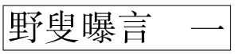
，但他却写作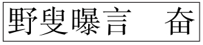
。同时，这二十字又是该书内容的自吹自擂。【作者はその本を二十册に分けて出版するつもりなのて、この二十字を啗目字の代用として每册の表面に一字づつ書くのです。例へば
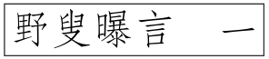
とかく可きものは、「一」とかかないで、次の様にする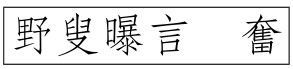
而してその二十字は、かた一方本の内容を自畫自讚して居る】309页7行
是为鱻妖之“穷神尽化”云……
问：“云”是“说……”还是“……云云”？（“云”系原文的文字还是著述添加的字？）
答：“云”是我加的字，“说……”、“听说……”之意。
【「唝」は私の言葉で「と唝ふことだ」、「であるさうだ」などの意味】
309页最末行
砉然
问：想请教“砉”的读音，用罗马字。在日本，读ケキ、クワク等。
答：读HUW A！把木板上浆毕晒干的布迅速撕下时发出的声音。肉店老板技巧地把肉从骨头切开时，也用此字形容。
【HUW A！
張物を迅速に板から引りはなすとこんな音をする。肉屋が巧に肉を骨から切りはなすときにもこの字で形容する。】
311页1行
甘鼎亦弃官去，言将度廋岭云
问：“云”是“云云”还是“说……”？
答：“云云”。那书中……云。“廋”应作“庾”。
【其の本に……と唝ふ】
312页9行
姑勿论六朝俪语，即较之张鷟之作，虽无其俳谐，而亦逊生动也。
问：“有诙谐的是《燕山外史》，多生动的是《游仙窟》”之意吗？
答：《燕山外史》在诙谐与生动两方面均不及《游仙窟》。
六朝俪语（与之比较）且不说（含有当然及不上之意），即便与张
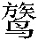
的作品相比，也没有那样诙谐，而且其生动性也居劣。【『燕山外史』は俳諧と生動鳑方とも『逯仙窟』に及ばないことです。
六朝儷語（との比較は）暫く言はないで（無論及ばないの意味をふくんで居る）。張鷟の作にくらべてもあの様に俳諧ではないけれども而してその生動にも劣つて居る。】
313页6行
侍女花
问：“侍女花”是什么？日本翻刻的《燕山外史》中，为“待女花”，注为“兰花”，您以为如何？
答：“侍”系误排。
大概是从女子来种香气就更好的传说而来的花名罢。等待女子之花。看来，兰花也是颇不正经的花。
【「侍」は誤植。
女が植ると香がもう一層よいと唝ふ佾説から瘄た名でしよう。女を待つ花。して見れば蘭も頗る不屣な花だ。】
314页6行
壬遁……象纬
问：“壬遁”和“象纬”是什么意思？
答：以“六壬”之术卜知未来（及吉凶）的方法，谓“壬遁”。以星象及《纬书》（汉代人写的伪书）卜知未来大事的学问，称“象纬”。
【「六壬」と唝ふと術によつて未瘄（吉凶）を知る方法。
星象及び「緯書」（漢代人の造つた僞書）によつて未瘄の大事を知る學問。】
319页3行
双陆马 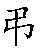
问：“弔”不应写作“吊”吗？（或是谐音，故两种写法均可？）
答：“弔”是古字，“吊”是后起字，两字系同一个字。
【傢は古字，吊は後起字、二字同一です。】
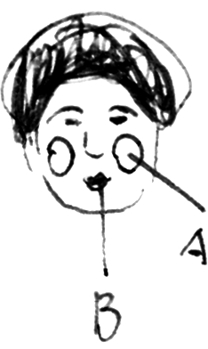
（增田画）
书外的问题
问：胭脂作为古代化妆品，
A.是涂于脸颊的东西吗？
B.是涂于嘴唇的东西吗？
抑或 A、B皆涂？
请问问尊夫人。
答：大概 A、B两处皆涂罢。从古画中可知。“尊夫人”的胭脂学程度颇靠不住，故未问她。
【 A、B鳑方共に用ひましたものだらう。古畫から知る可し。
「令閨」の胭脂學の程度はすこぶる、あやしいもので、きかなかつた。】
北美合众国大统领麦坚尼，于西历一千九百零一年九月十四日，被枣高士刺毙于纽育博览会。捕缚之后，受裁判。枣高士警言：“行刺之由，乃听无政府党钜魁郭耳缦女杰之演说，有所感情，决意杀大统领者也。”
问：上文带点的人名，请用罗马字教我。这些如在图书馆查书就明白，但马上因您而明白则省事也。——若麻烦，就罢了。
答：麦坚尼=Willian Mckinley
枣高士=Leon Czolgosz
郭耳缦= Emma Goldman（？）
十八[28]
323页1行 《品花宝鉴》第二十九回引文
面庞黄瘦
问：“庞”为何意？是“脸瘦而隆起”之意吗？还是“面庞”即面之意？
答：“庞”是庞大=隆起的颧骨部分，故指脸颊。一般意为全“脸”。此处也是“脸”的意思。
【龐は龐大=隆起、顴骨の部分で、だから、頰を指すのですが一般には「顏」全部を意味する。ここにも顏の意味です。】
326页4行 《花月痕》引文
……就书中“贾雨村言”例之……
问：贾雨村是书中的人名吗？若人名，不用加旁线吗？
答：“贾雨村言”与“假语村言”同音，成了“假造故事、俗语”的意思，故旁线可加可不加。
【「賈雨村言」は「仮語村言」と同音、「拵らへた物語、俗な言葉」になるのでから、旁綦を引いてもいいが引かなくても可なり】
326页倒数2行
丛桂
问：“丛桂”在别的作品中也屡见，“丛”是桂林之意吗？或是称木犀为丛桂，以与单纯的桂相区别？
答：桂之多数，一株以上的桂树。但尚未达到“桂林”的地步。
【桂の多啗、一本以上の桂樹ですが、桂林の様に大きくない】
327页倒数5行
骆马杨枝
问：“杨枝作鞭”是认为某种风流韵事吗？（是什么人诗中也有的话吗？）
答：据说唐代贵少爷有骑白马、折道旁柳枝作鞭的风流事。“骆马”为黑鬣白马；“都去也”=均已过去了！
【唐代の貴少年は白馬に耬つて路側の柳の枝を折つて鞭とすることは風流なことであつた様です。
駱馬は黑鬣の白馬
都去也=皆なすぎさつた！】
327页倒数4行
秃头回道……
问：“秃头”是绰号吗？
答：是。
问：是男？是女？
答：男仆。
334页倒数5行 《海上花列传》引文
耐想拿件湿布衫拨来别人着仔，耐末脱体哉
问：把湿衬衫给别人？
答：把麻烦事推给别人。“湿布衫”其实与“湿的布衫”稍稍不同，意思是“很难干的布衫”。
【厄介なことを别人に
溧布衫は宓は「溧つたシゃツ」とは少々違ふて「よく乾かないシャツ」と意味するのです。】
问：这句话的意思是“把不愉快的事推给别人，自己一身轻”，但如果稍微具体地来讲，是怎样的事呢？
答：这是苏州话。你打算（想）拿“湿布衫”给别人穿，自己图轻快啊！
如某男爱上某女，后又讨厌她，但此女无论如何不愿离去，像五月苍蝇一样叮着他。此时他设法让别的男子与此女接近，一旦成功，自己就解脱了。
或某人经商，稍受损失，问题不大，总之，不想干了。于是巧妙地欺骗某傻瓜，把生意让给他，就解脱了。
【これは蘇州の言葉
御前は溧布衫を人に着せて自分に至つてはさつぱりになるつもり（想）だらう！
例へば或る男が一人の女を愛したが後にいやになつた。併しその女は中々はなさない、五月蠅くなる。ここにおいて、别の男をその女に接近させて女がその男にくついて仕舞ふ工夫をする。成功すれば、自分は、さつぱり。
或は或る人が或種商を绖蠋する。少々損をするが大いしたこともない。焠角、いやになつた。こんどは或る馬鹿をうまくだましてその商壳を譲つて仕舞ふ。さつぱり】
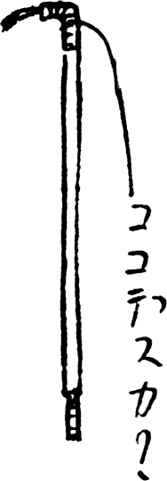
（增田画）
问：“仔”与“了”同义吗？
答：“着仔”是“使……穿上”的意思。
问：原书“未”系“末”之误吧？
答：对。“耐末”，“至于你这家伙”的意思。
334页倒数3行
等我说完仔了
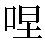
问：“仔了”三个字是连读作为语尾？还是“说完仔了”为一句话，仅“”一个字是语尾？
答：“等我说完了吧”的意思。“仔了”相当于“完了”，“”相当于“吧”。
【我が説完して仕舞ふのを待てよ】
335页倒数5行
斗门噎住
问：斗门是这儿吗？
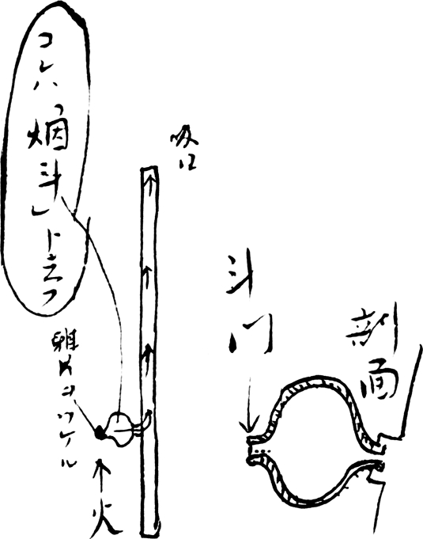
答：这里叫“烟斗”，装雅片，点火。雅片“烟管”。装在斗门里的雅片也须开一小孔。烟灰崩落斗门就被阻塞。所谓“噎住”即塞住了。
【雅片の“きせる”です
斗門につけた雅片にも小孔を一つあけなければならない。くつれると斗門がふさがれる。“咽住”とは塞って仕舞のこと。】
336页倒数4行
至描写他人之征逐，……
问：“他人”是“他们”还是“别人”？大约是前者吧？
答：“他人”指“上海名流”以外的人们。
【他人とは「上海名流」以外の人々です。】
十九[29]
339页倒数3行 《儿女英雄传评话》介绍
马从善序云出文康手，盖定稿于道光中。文康，费莫氏，字铁仙，满州镶红旗人，大学士勒保次孙也，“以资为理藩院郎中……”
问：马从善序文仅“出文康手，盖定稿于道光中”两句吗？
答：不。
问：或者，至“孙也”是马氏之语吗？
答：不。
问：仅“出文康手”一句是“马从善序云”，“盖”云云乃著者之意吗？
答：是。
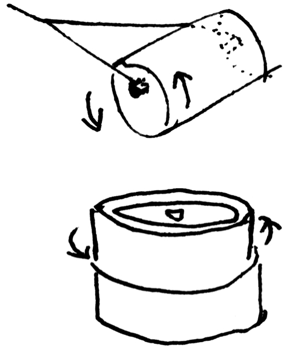
（增田画）
342页3行
碌碡……关眼儿
问：这是碌碡吗？
答：是。压平地面之物。
【地面を平坦にするもの】
问：这是碌碡吗？
答：不。这是磨。
【これは磨と囷す。】
问：关眼儿是插入轴心的孔吗？
答：是。
346页最末行
槅扇
问：“槅扇”是什么？
答：用文言讲，即“门”或“户”。南方的门或户（其实门有两扇，户为一扇，但现在两者混用）以两扇为多，用木板制成，没有格子。形状大抵如你画的。北方以一扇为多，有格子，如下图。中间一扇即“槅扇”，上半部分格子，下半部分木板。外面又可挂竹帘（冬天的门帘）。
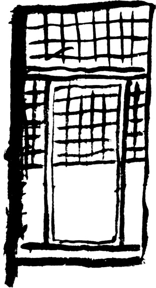
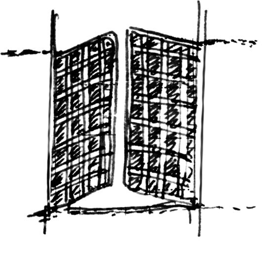
（增田画）
【文言で言へば「門」or「户」です。
南方の門or户（宓は門は二枚、户は一枚、併し今は混用）は二枚の方が多い、板で拵らへ、格子なし、併し形は大抵、囝の如し。北方のは一枚もの多く格子あり、如下囝：
中央の一枚は即ち「槅扇」、上半は格子、下半は板。その外面に又竹簾を捱ける（冬は門幕）】
问：槅扇外是室吗？
答：不，这儿是庭院或过道。
问：槅扇内是室吗？
答：是。
问：门上格子内是空的或薄板吗？
答：不，空间糊上纸。
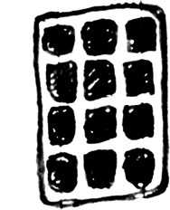
（增田画）
【空間は紙で張ります。】
问：这在日本叫“格子户”，大概与此相似吧？
答：对。
347页3行
穿着簇青的夜行衣靠
问：“衣靠”=衣装？还是排印上的错误？
答：不是误排。但含义与“衣装”同。至于为何用“靠”，因系“侠客”用语，我们凡人难以理解。
【併し意味は「衣裳」と等し。
何故、「靠」と唝ふのか？「俠客」達の用語ですから我們凡人には解り難し。】
二十[30]
356页1行 李宝嘉传略
后以“铺底”售之商人
问：“铺底”=店的基础=店的权利=店的一切支配权、经营权？
答：“铺底”实际就是店的剩货。所谓“售”即把屋（一般不是自己的，是租赁的）里买剩的一切东西出让给别人。至于商店招牌，有时出让，有时不出让。与日本的“老店”似稍有不同。
【鋪底とは宓は店の殕りです。「售」とは家屋（大抵は自分のものでなくて、かり屋）の造作一切の壳り殕つた品物を人に譲づること。看板は譲づるときと譲らないときある。日本の「しにせ」とは少し違ふらしい】
359页最末行 《官场现形记》引文
最讲究养心之学
问：“养心之学”是什么样的学问？
答：不管遇什么事，心不为所动的功夫。即道学。
【どんなことあつても、心が動かない工夫。詰り道學です。】
360页最初行
送他一个外号，叫他做“琉璃蛋”
问：“琉璃蛋”是玻璃球吗？
答：是玻璃球。滑溜溜的，无法把握，喻不得要领的狡猾者。
【ガラス玉です。ツルツルすべつて把握の出瘄ないもの、要領を得ない、狡猾なもの】
问：因能够透视，所以叫琉璃蛋吗？
答：不。
369页7行 《孽海花》引文
户部员外补阙一千年
问：“阙”=缺？
答：对。
问：“户部”=财政部？
答：对。
问：“员外”=徒有其名、没有职务的官名？
答：对。
问：也就是说，户部员外一千年也补阙（就官）是不可能的事。总之，是对无官的自嘲自尊的俏皮话？
答：户部员外或许一千年也不补阙。总之，是虽然有官等于无官的自嘲自尊的俏皮话。
户部员外系官名。户部官的职位是定员的，因此，一旦空缺（死亡、晋升等），“员外”们就按顺序就其空位，此所谓“补缺”。“补缺一千年”即“补缺需要一千年（必须等）”的意思，不知何时就实职。
【户部員外は官名。
户部官の職は定員あるものですから、その職があくと（死ぬか、升進するか）、「員外」たるものは順序にそのあいた職につく。それを「補缺」と唝ふ。「補缺一千年」=「補缺するには一千年かかる（待たなければならない）」と云ふ意味で何時に宓職につくことが解らないことです】
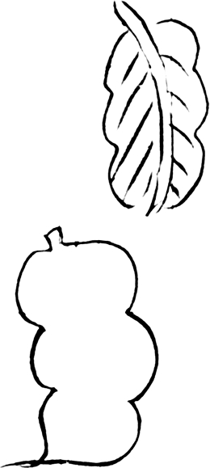
369页9行
秋叶式的洞门
问：“秋叶式”是何种样子？
答：似芭蕉叶状，怪形状。此种形状由芭蕉而来。
【芭蕉の葉らしい形、馬鹿な形です。
その形は芭蕉から來たものだと思ふ。】
370页1行
淡墨罗巾灯畔字，小风铃佩梦中人
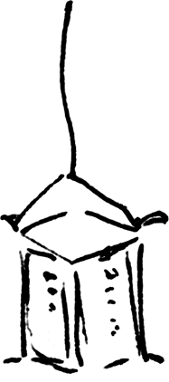
（增田画）
问：罗巾上的字是用淡墨写成的？
答：对。
问：是用罗巾制成灯？
答：不对。
问：小风铃是小的风铃？
答：对。
问：或是替小风佩铃？
答：不对。
用淡墨在罗巾上写的（字），是灯畔（写的）字。微风吹拂，佩铃发出叮叮声，这是连做梦也见到的人（=永远记着的人）。
【淡墨で羅巾の上に書いた（字）は燈畔の（書いた）字、小い風に吹かれて鈴佩がチリンチリンと鳴つて居るものは夢の中にまで見ゆ人（=いつも記憶して居る人）】
370页最末行
一路蹑手蹑脚的进来
问：“蹑手蹑脚”是慢慢、徐徐之意吗？
答：不对。
问：有的辞书解释为“迈小步急走貌”，似乎不妥，至少不合书中情景。
答：对。
是轻手轻脚不发出任何声响，即悄悄进来，不让主人知道。此处含有恶作剧成分。
【手も足も音をさせない、何の音も立たせない
詰りひそかに這入つて主人に知せない爲めです。そこには朘戢の分子を含んで居る。】
书外的问题
A.道班、道台
问：“道台”是官名吗？
答：对。
问：或，“道台”是来自民间的尊称吗？
答：不对。
问：民间叫“道台”，但其实政府并无此种官名？
答：不对。有此种官名，叫做“道”。
【出して居ます。「道」と唝ひます】
B.A大老爷（父），A大少爷（子）
问：“大少爷”限于长子吗？
答：对。
问：次子、三子也叫“ A大少爷”吗？
答：不对。
问：次子叫“ A二少爷”，三子叫“ A三少爷”吗？
答：对，是这么叫。
【そう云ふ風に云ひます。】
注 释
[1] 本节所答的问题，见于第二篇《神话与传说》。
[2] 本篇所答的问题，见于第九篇《唐之传奇文（下）》。
[3] 本节所答的问题，见于第十一篇《宋之志怪及其传奇文》。
[4] 此处原有关于“御车女”的解答，参看331113致增田涉信附件。
[5] 此处鲁迅未答。
[6] 本节所答问题，见于第十二篇《宋之话本》。
[7] 此条增田涉未问，鲁迅自作解释。
[8] 本节所答的问题，见于第十三篇《宋元之拟话本》。
[9] 本节所答的问题，见于第十四篇《元明传来之讲史（上）》。
[10] 本节所答的问题，见于第十五篇《元明传来之讲史（下）》。
[11] 本节所答的问题，见于第十六篇《明之神魔小说（上）》。
[12] 本节所答的问题，见于第十七篇《明之神魔小说（中）》。
[13] many 英语，“许多”之意。
[14] viel 德语，“各种”之意。
[15] 本节所答的问题，见于第十八篇《明之神魔小说（下）》）。
[16] 本节所答的问题，见于第十九篇《明之人情小说（上）》。
[17] mǔtter 德语，母亲。
[18] 此处鲁迅未答。
[19] 河间妇 唐代柳宗元《河间传》：“河间，淫妇也。不欲言其姓，故以邑称。”河间今属河北。
[20] 本节所答的问题，见于第二十篇《明之人情小说（下）》。
[21] 本节所答的问题，见于第二十一篇《明之拟宋市人小说及后来选本》。
[22] 本节所答的问题，见于第二十二篇《清之拟晋唐小说及其选本》。
[23] 本节所答的问题，见于第二十三篇《清之讽刺小说》。
[24] 女作家庐隐（1898—1934）曾在1923年6月1日至9月11日的《晨报》副刊《文学旬刊》第3至11号上发表她写的《中国小说史略》。
[25] 本节所答的问题，见于第二十四篇《清之人情小说》。
[26] 此《年表》摘录在1935年6月出修订本时已删去。
[27] 本节所答的问题，见于第二十五篇《清之以小说见才学者》。
[28] 本节所答的问题，见于第二十六篇《清之狭邪小说》。
[29] 本节所答问题，见于第二十七篇《清之侠义小说及公案》。
[30] 本节所答的问题，见于第二十八篇《清末之谴责小说》。